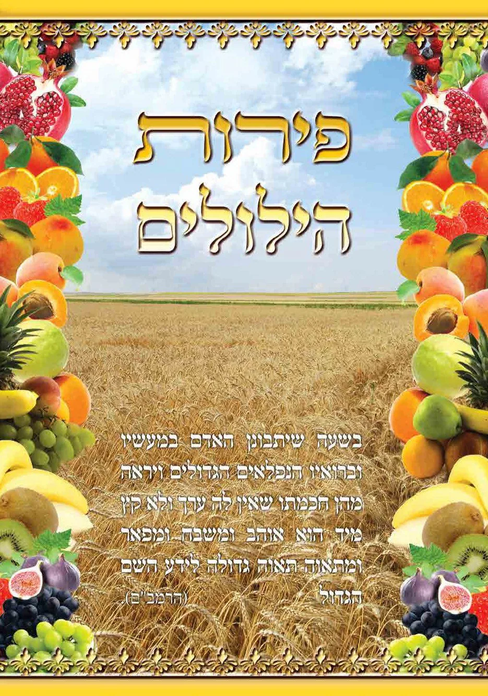
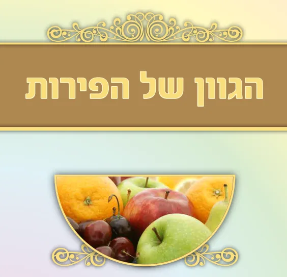
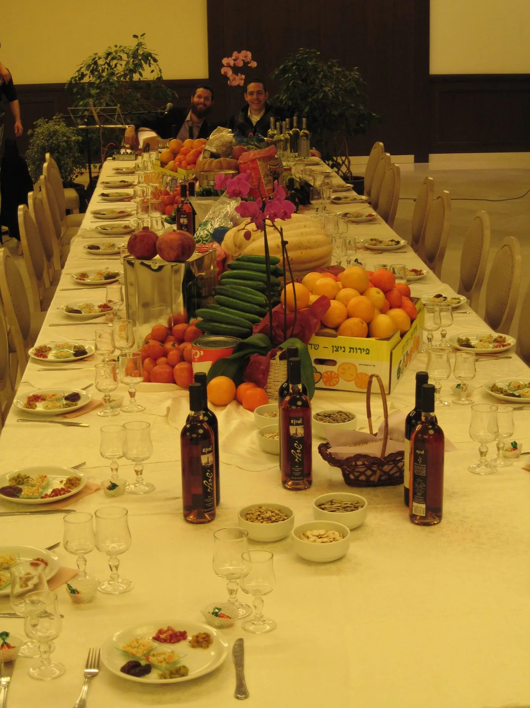
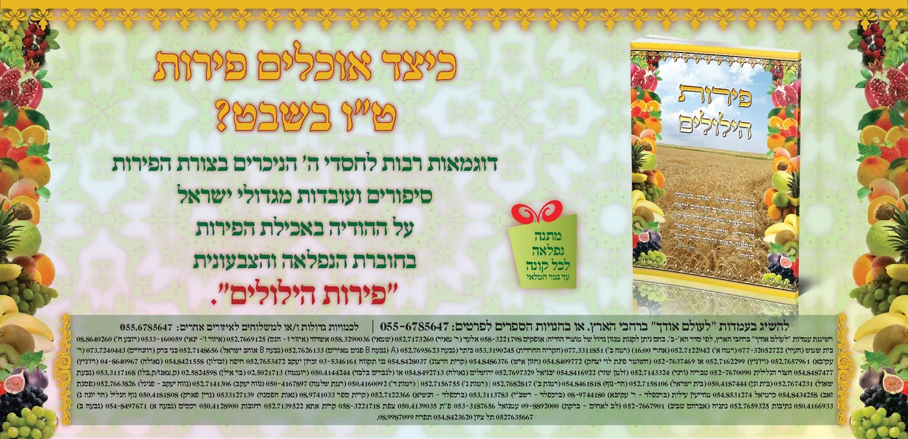

בנוסף פרק מיוחד שכולו התבוננות ב"חסד המופלג של הפירות"
- החוברת שתהפוך לכם את שולחן ט"ו בשבט - לחגיגה של אהבת ה'.
- החוברת שתסביר לכל בני המשפחה מקטן ועד גדול מדוע אוכלים פירות.
- לאכול את הפירות מתוך הכרה בטובת החסד המופלג של מתנת הפירות הנפלאים שהעניק לנו בורא העולם.
משובץ בסיפורים נפלאים מגדולי ישראל, שהתרגשו מחסדי הבורא בפירות.
רוצים לראות דוגמא מהספר - לחצו כאן
בדף התשלום יש למלא את השם והכתובת
בעז"ה נשלח לכם את החוברת בדואר 24 ותוך כמה ימים החוברת אצלכם.
כמו כן ניתן לקנות בעמדות בכל רחבי הארץ, לבירור העמדה הקרובה לביתכם
התקשרו לטלמסר 079-5420539 שלוחה 22

מה נלמד בחוברת פירות הילולים?
- פרק א - ט"ו בשבט בהלכה, הנפ"מ ההלכתיות שיש מיום ט"ו בשבט.
- פרק ב - שלושה טעמים למנהג אכילת פירות בט"ו בשבט.
- פרק ג - סדר אכילת הפירות במחיצת גדולי הדורות ובמחיצת המקובלים.
- פרק ד - העולם הנפלא של הפירות - לגלות את חסדו וטובו המופלאים של בורא העולם בתוך הפירות.
- בפרק זה נלמד על החסדים: בקליפה, בגבעול, בבשר הפרי, בזרעים, ובמגוון של הפירות.
מחיר החוברת: 25 ש"ח כולל משלוח עד הבית.
בדף התשלום יש למלא את השם והכתובת
בעז"ה נשלח לכם את החוברת בדואר 24 ותוך כמה ימים החוברת אצלכם
כמו כן ניתן לקנות בעמדות בכל רחבי הארץ, לבירור העמדה הקרובה לביתכם
התקשרו לטלמסר 079-5420539 שלוחה 22
שו"ת בנושא החוברת - פירות הילולים
- כמה עמודים החוברת? 128 עמודים.
- כמה עולה החוברת? 25 ש"ח (כולל משלוח עד הבית)
- האם ניתן לרכוש במקום אחר? כן, את החוברת מוכרים בכל העמדות של לעולם אודך ברחבי הארץ. לפרטים: 079-5420539.
- האם החוברת תגיע עד ט"ו בשבט? אנחנו שולחים בדואר 24, זה מגיע בדרך כלל תוך יומים שלושה.
- האם צריך ללכת לדואר לקחת את החוברת? לא אין צורך, החוברת נכנסת כמעט תמיד בתיבת הדואר.
- כיצד משלמים על החוברת? בכרטיס אשראי בנדרים פלוס. החברה בה משתמשים רוב מוסדות התורה בארץ.
- לאיזה גיל מתאימה החוברת? החוברת מיועדת למבוגרים (גברים ונשים), אבל ניתן לספר את החומר גם לילדים קטנים מאוד.
- אין לי חיבור לאינטרנט כיצד אני יראה את החוברת? תכתבו לנו במייל ונשלח לכם דוגמא.
- האם ניתן לשלם בהעברה בנקאית? כן, יהודה טאוב. בנק לאומי. סניף 897 מס"ח: 1890659. יש להודיע לנו במייל על העברה.
- מה עוד יש לכם על הודיה לה'? ניתן לקבל בתוספת 5 ש"ח בלבד - דיסק שירים נפלא על מזמור לתודה.

- חוברת פירות הילולים אינה נגמרת כמו התפוחים והשקדים, היא תתן לך תענוג בט"ו בשבט במשך עשרות שנים.
- מחיר החוברת כולל משלוח עד הבית, וכולל מתנה לפי בחירה (יש לבקש במייל).
- חוברת פירות הילולים טובה לאבא ללמוד הלכות, טובה לאמא ללמוד טעמים, טובה לילדים ללמוד חסדים.
- אבא שמספר על נפלאות הבורא דרך החוברת, מחבר את בני הבית ליום הגדול הזה ומגדל דור של ילדים שרואים בפלאי הבריאה. ושמחים עם הבורא.
החוברת צבעונית ברמה גבוהה מאוד, ולכן הדפסתה מאוד יקרה, אבל כיון שהדפסנו כמות גדולה מאוד אתם נהנים ממחיר מוזל במיוחד.
מחיר החוברת: 25 ש"ח כולל משלוח עד הבית.
רוצים לראות דוגמא מהספר - לחצו כאן
בדף התשלום יש למלא את השם והכתובת
בעז"ה נשלח לכם את החוברת בדואר 24 ותוך כמה ימים החוברת אצלכם
כמו כן ניתן לקנות בעמדות בכל רחבי הארץ, לבירור העמדה הקרובה לביתכם
התקשרו לטלמסר 079-5420539 שלוחה 22
 | |
|